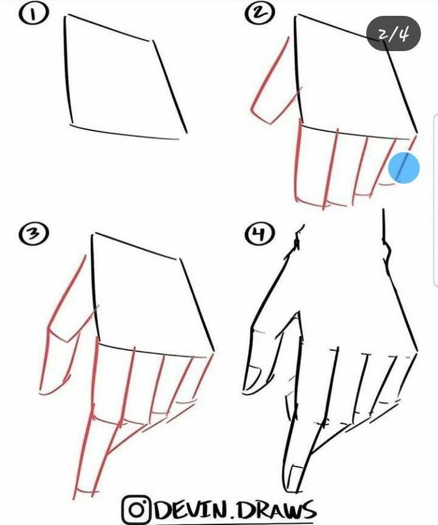

|  |
When drawing hands, consider focusing on these important elements:
1. Anatomy: Understand the structure of bones and muscles in the hand, including the wrist, palm, fingers, and thumb.
2. Proportions: Familiarize yourself with the typical proportions of hands (e.g., the fingers are usually about the same length as the palm).
3. Gesture: Practice capturing the dynamic movement and various poses of hands to convey action and emotion.
4. Fingernails and Joints: Pay attention to details like fingernails, knuckles, and how joints bend.
5. Perspective and Foreshortening: Learn how hands appear in different perspectives and how to depict them realistically.
6. Simplicity: Start with basic shapes to simplify the hand’s complex structure before adding details.
7. Skin and Texture: Understand how to render skin tones, textures, and how light interacts with the hand’s surface.
8. Reference: Use real hands as references, observing different angles and positions.
9. Common Poses: Study and practice common hand gestures and poses, such as holding objects or making shapes.
10. Practice: Regularly sketch hands from various angles and in different positions to improve your skills.
Consistent practice and observation are key to mastering hand drawing!
|